Guide d'accueil · CannesWelcome guide · Cannes
Entre la plage du Midi et la vieille ville du Suquet.Between Plage du Midi and the old town of Le Suquet.
Ce guide sur votre téléphone : scannez avec l'appareil photo.This guide on your phone: scan with your camera.
01
Bienvenue à la Maison Midi, votre adresse côté Suquet : un Cannes plus intime, à cinq minutes du Vieux-Port et pourtant loin de l'agitation de la Croisette.
Welcome to Maison Midi, your address on the Suquet side: a more intimate Cannes, five minutes from the Old Port yet far from the bustle of the Croisette.
Ici, les journées ont leur rythme : le marché Forville le matin, la plage du Midi à trois minutes, un verre sur un rooftop quand le soleil plonge derrière l'Estérel. Ce guide rassemble tout ce qu'il faut pour en profiter comme quelqu'un d'ici.
Days here have their own rhythm: Forville market in the morning, Plage du Midi three minutes away, a drink on a rooftop as the sun sinks behind the Esterel. This guide holds everything you need to enjoy it like a local.
Une question, une envie, un imprévu ? Écrivez-nous, même pour un détail. Nous préférons le savoir pendant votre séjour.
A question, a wish, a hiccup? Message us, even for something small. We would rather know during your stay.
02
Nous vous accueillons en personne.
We welcome you in person.
Nous vous accueillons personnellement et vous remettons les clés en main propre. Indiquez-nous simplement votre heure d'arrivée la veille.
We welcome you personally and hand you the keys. Just let us know your arrival time the day before.
Le stationnement est gratuit dans la rue, sur le boulevard Jean Hibert et dans la rue du Pré, juste à côté. L'appartement étant en rez-de-chaussée, vous déposez vos bagages directement à la porte.
Street parking is free, on Boulevard Jean Hibert and on Rue du Pré, right next door. The apartment is on the ground floor, so you can drop your luggage right at the door.
Si la rue est complète, le parking couvert Suquet Forville est à 6 minutes à pied :
If the street is full, the covered Suquet Forville car park is 6 minutes on foot:
03
L'essentiel, pièce par pièce.
The essentials, room by room.
Réseau Wi-Fi
Wi-Fi network
Mot de passe
Password
Scannez pour vous connecter
Scan to connect
Ouvrez les réglages Wi-Fi de votre téléphone, choisissez le réseau ci-dessus et saisissez le mot de passe. Pas de connexion ? Écrivez-nous.
Open your phone's Wi-Fi settings, choose the network above and enter the password. No connection? Message us.
En plusUne carte avec QR code est posée dans l'appartement : scannez-la avec l'appareil photo pour vous connecter sans rien taper.
BonusA QR code card is in the apartment: scan it with your camera to connect without typing.
04
Les modes d'emploi, en images.
How things work, in pictures.
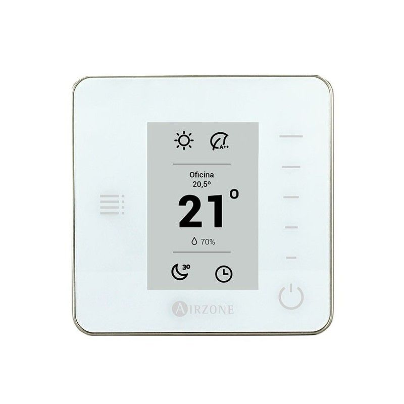
Le thermostat, dans chaque pièce
The thermostat, in every room
Climatisation gainable, silencieuse et invisible. Chaque pièce a son thermostat et se règle indépendamment.
Quiet, concealed ducted air conditioning. Each room has its own thermostat and is set independently.
La télécommande SolarCell
The SolarCell remote
Une télévision Samsung OLED de 77 pouces, avec une barre de son Samsung : le son passe automatiquement par la barre.
A 77-inch Samsung OLED TV with a Samsung soundbar: sound goes through the soundbar automatically.
Chaque chambre a son émetteur mural Somfy, à côté de la fenêtre.
Each bedroom has its own Somfy wall switch, next to the window.
Fermés aux heures chaudes, les volets gardent l'appartement frais.
Closed in the heat of the day, the shutters keep the apartment cool.
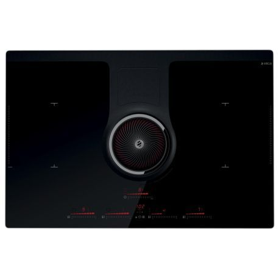
Une plaque à induction Elica NikolaTesla, avec la hotte intégrée au centre : les fumées sont aspirées à la source.
An Elica NikolaTesla induction hob with the extractor built into the centre: steam and smells are drawn down at the source.
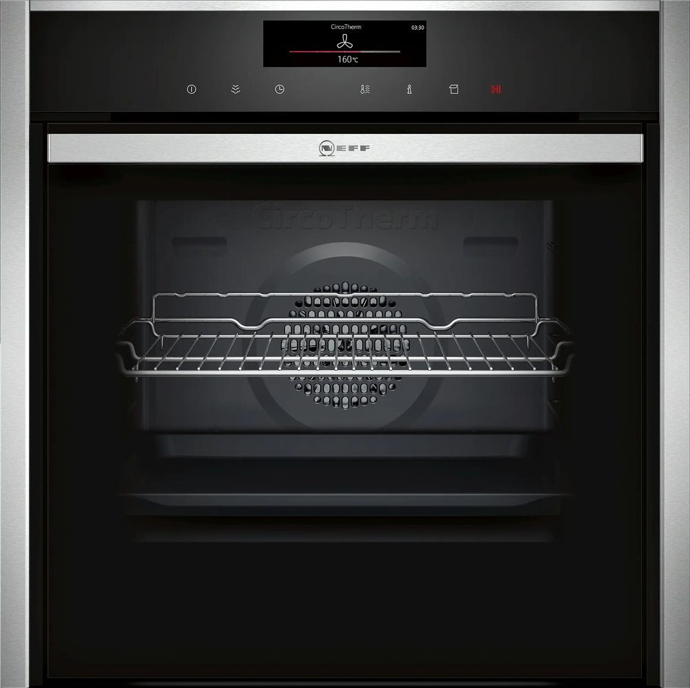
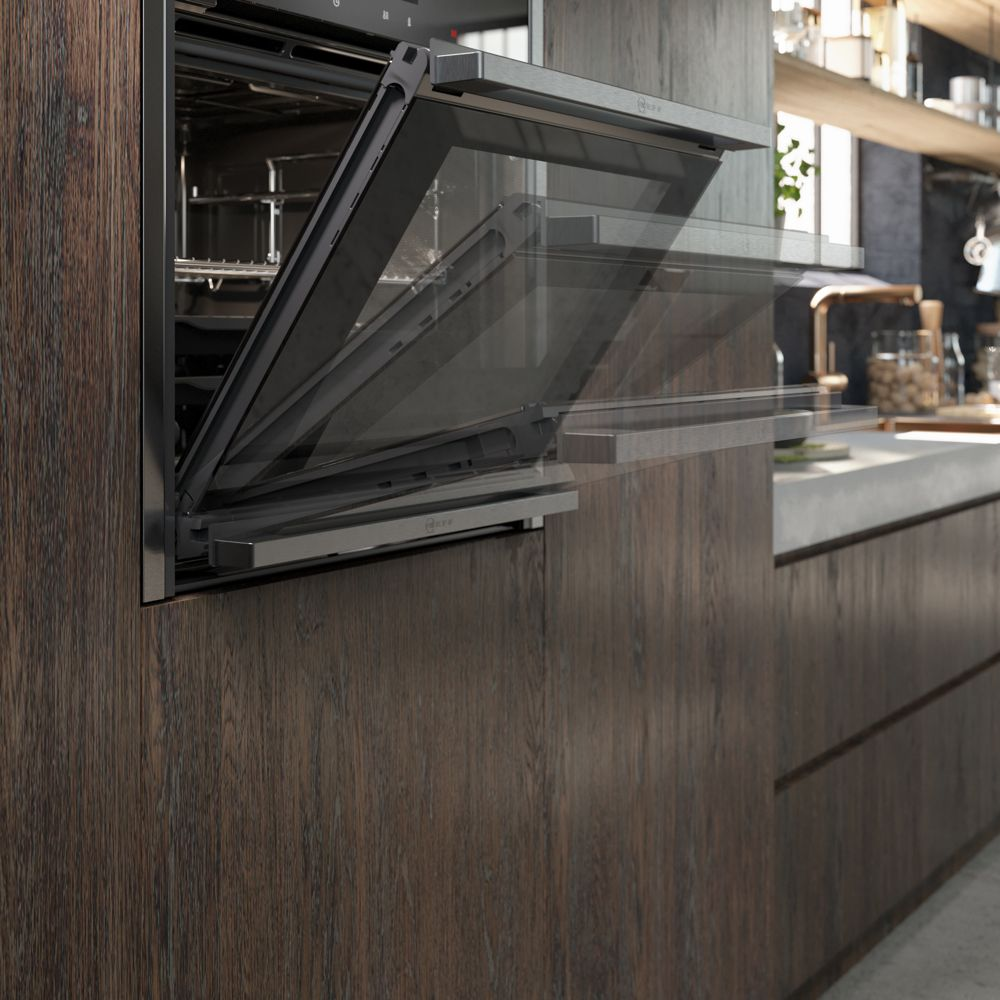
La porte glisse sous le four
The door slides under the oven
Un four Neff N 90 : cuisson traditionnelle, 100 % vapeur ou combinée. Toutes les commandes sont des touches tactiles sur le bandeau.
A Neff N 90 oven: conventional, full steam or combined cooking. All controls are touch keys on the panel.
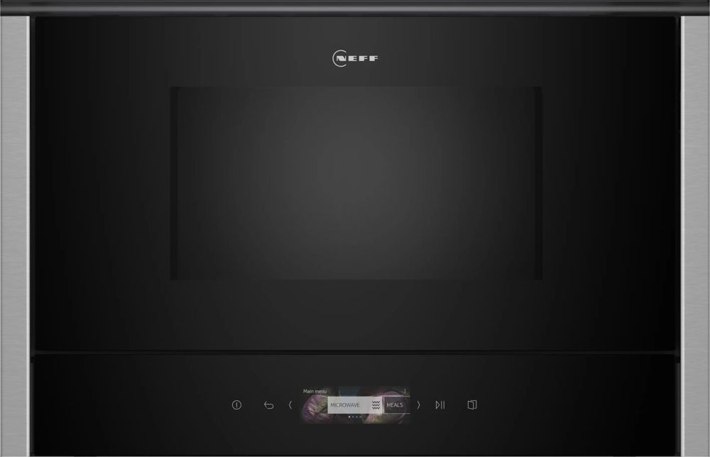
Jamais de métal ni de papier aluminium.
Never metal or foil.
Une machine Neff encastrée, tout automatique : elle moud les grains à chaque tasse. Réservoir d'eau et bac à grains se trouvent derrière la porte de la machine.
It grinds fresh beans for every cup. The water tank and bean container are behind the machine's door.
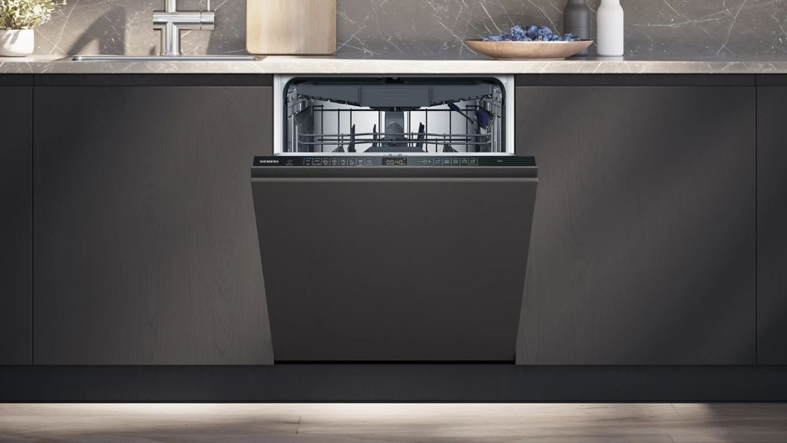
Lave-vaisselle tout intégré : les touches sont sur la tranche de la porte, visibles quand elle est ouverte.
Fully integrated dishwasher: the keys are on the top edge of the door, visible when it is open.
Le cycle est terminé quand l'affichage indique « 00h:00m ». Pour l'interrompre, maintenez Start environ 4 secondes.
The cycle is over when the display shows "00h:00m". To cancel it, hold Start for about 4 seconds.
Jamais de liquide vaisselle à main dans la machine : la mousse inonde la cuisine.
Never hand dishwashing liquid in the machine: the foam floods the kitchen.
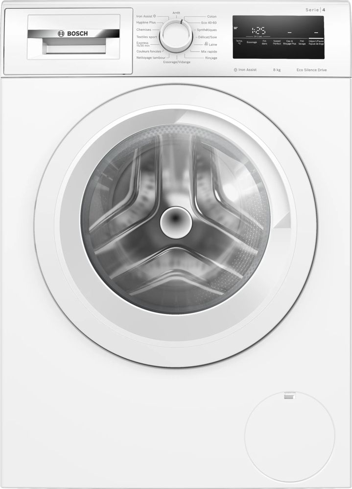
Le hublot reste verrouillé pendant le lavage. Laissez-le entrouvert ensuite.
The door stays locked during the wash. Leave it ajar afterwards.
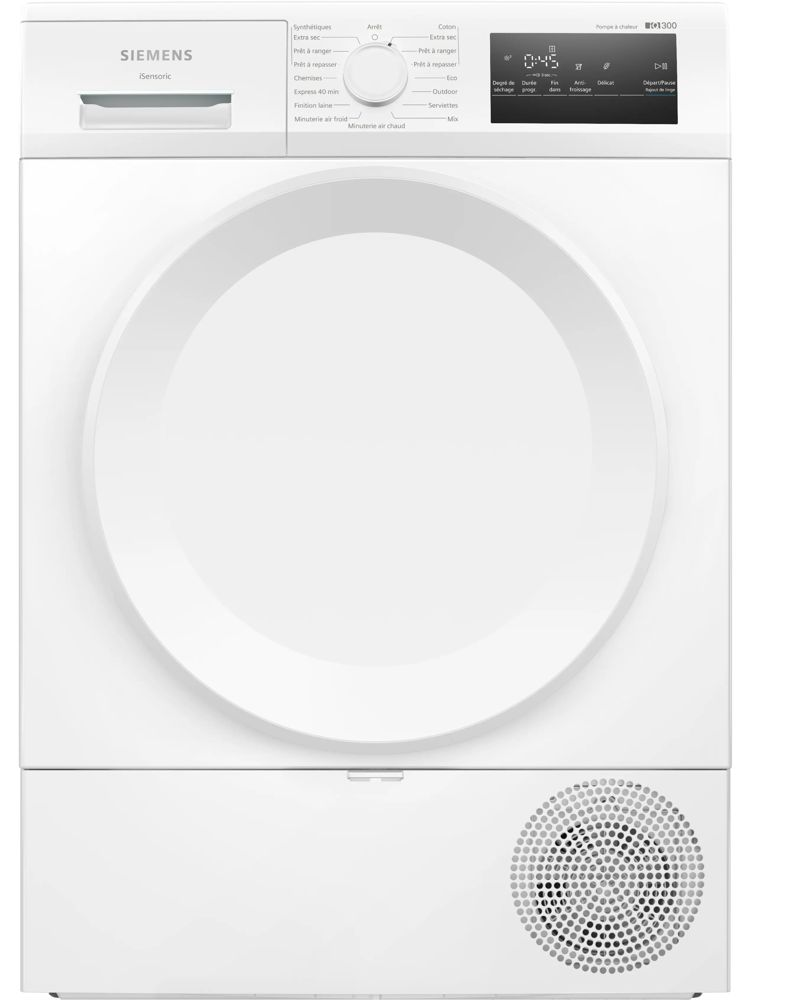
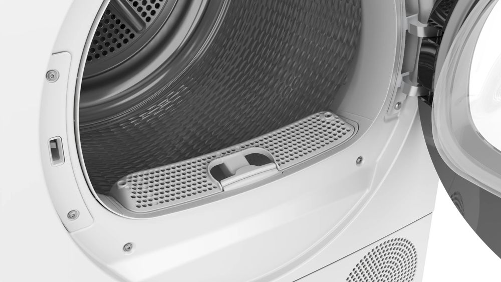
Le double filtre, dans la porte
The double filter, in the door
Un sèche-linge à pompe à chaleur relié à l'évacuation : aucun bac d'eau à vider. Ses capteurs arrêtent le séchage quand le linge est sec.
A heat-pump dryer connected to the drain: no water tank to empty. Its sensors stop the cycle once the laundry is dry.
Un message de nettoyage du filtre du bas apparaît ? Prévenez-nous. Maillots de bain et laine : séchage à l'air libre.
A message about cleaning the bottom filter? Let us know. Swimwear and wool: air-dry them.
05
Les petites subtilités, expliquées une fois pour toutes.
The little quirks, explained once and for all.
L'appartement compte deux salles de bain : une salle de douche, très simple d'utilisation, et la salle de bain côté chambre, avec sa baignoire-douche à commande électronique, expliquée ci-dessous.
The apartment has two bathrooms: a shower room, very easy to use, and the bathroom on the bedroom side, with its electronically controlled bath and shower, explained below.
Elle fonctionne avec une commande électronique : un écran rond à gauche, un bouton lumineux à droite. Tout se fait avec le bouton, en trois gestes.
It runs on an electronic control: a round display on the left, a lit button on the right. Everything is done with the button, in three gestures.
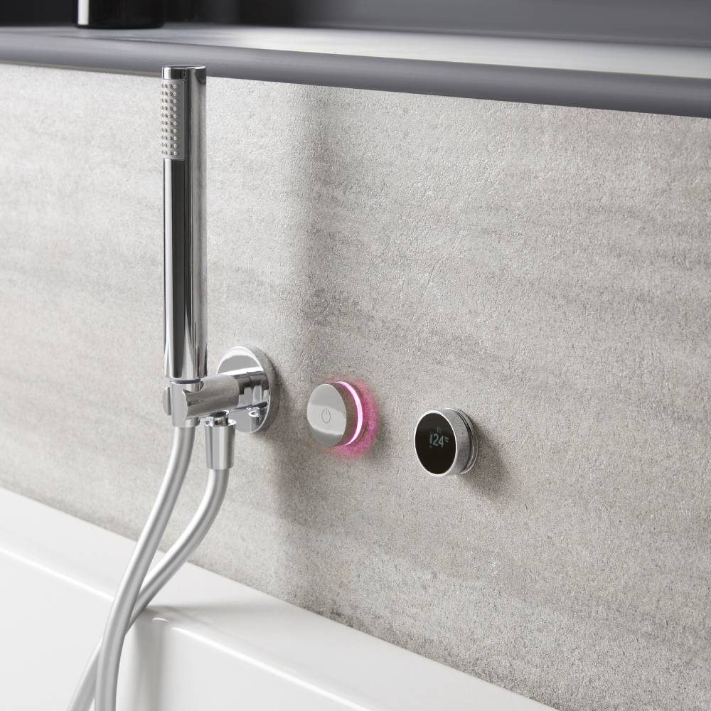
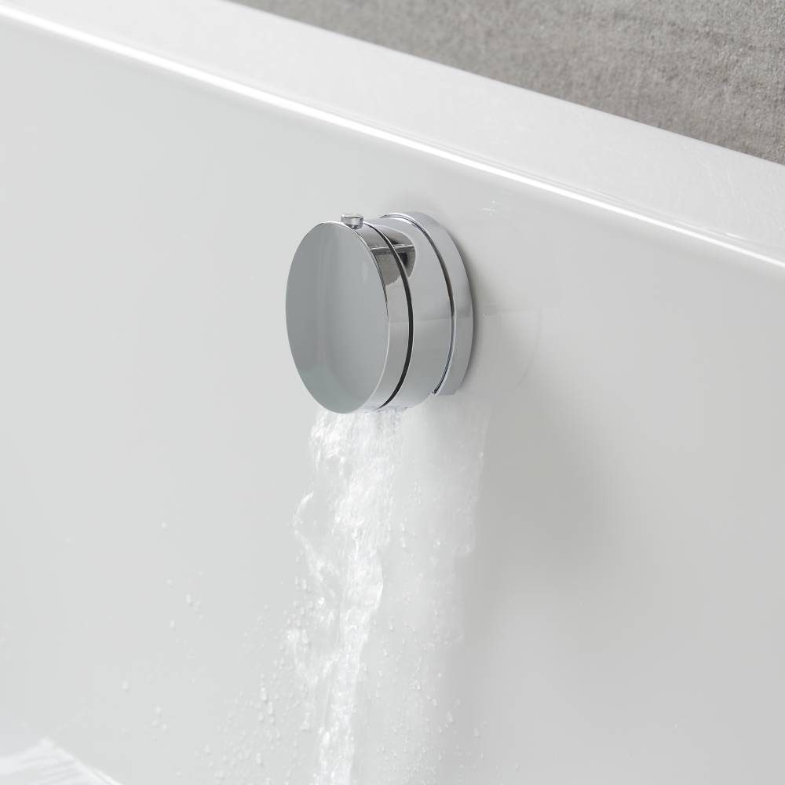
Notice Hudson Reed ↗Hudson Reed manual ↗
Photos : Hudson Reed. Chez vous, l'écran est à gauche et le bouton à droite :
Photos: Hudson Reed. In your bathroom, the display is on the left and the button on the right:
Geste 1
Gesture 1
Un appui bref sur le bouton : il s'allume en violet et l'eau coule. Un nouvel appui : l'eau s'arrête.
A short press on the button: it lights up purple and water flows. Press again: the water stops.
Geste 2
Gesture 2
Vers la droite, plus chaud ; vers la gauche, plus froid. La température s'affiche à l'écran. Bouton bleu : eau froide ; rouge clignotant : eau très chaude.
Clockwise for warmer, anticlockwise for cooler. The temperature shows on the display. Blue button: cold water; flashing red: very hot water.
Geste 3 · le plus important
Gesture 3 · the key one
Gardez le doigt appuyé sur le bouton et tournez-le en même temps : l'icône de l'écran passe de la douchette au remplissage de la baignoire. Relâchez quand l'icône voulue s'affiche.
Keep your finger pressed on the button and turn it at the same time: the icon on the display switches between hand shower and bath filling. Let go when the icon you want appears.
L'eau coule dans la baignoire alors que vous vouliez la douchette, ou l'inverse ? Refaites simplement le geste 3. Un mémo est aussi affiché dans la salle de bain.
Water filling the bath when you wanted the hand shower, or the other way round? Simply repeat gesture 3. A reminder card is also in the bathroom.
Laissez couler 20 à 30 secondes : l'eau chaude arrive.
Let it run 20 to 30 seconds: the hot water is on its way.
06
Sur simple demande, par message.
Just ask, by message.
Pendant le séjour
During your stay
Un ménage et du linge frais en cours de séjour, idéal pour les longs séjours.
Housekeeping and fresh linen during your stay, ideal for longer visits.
En famille
With children
Installé avant votre arrivée : prévenez-nous lors de la réservation.
Set up before you arrive: just tell us when you book.
07
Quelques règles simples, pour vous et pour nos voisins.
A few simple rules, for you and for our neighbours.
08
Tout se fait à pied. Les numéros renvoient à la carte.
Everything is walkable. Numbers refer to the map.
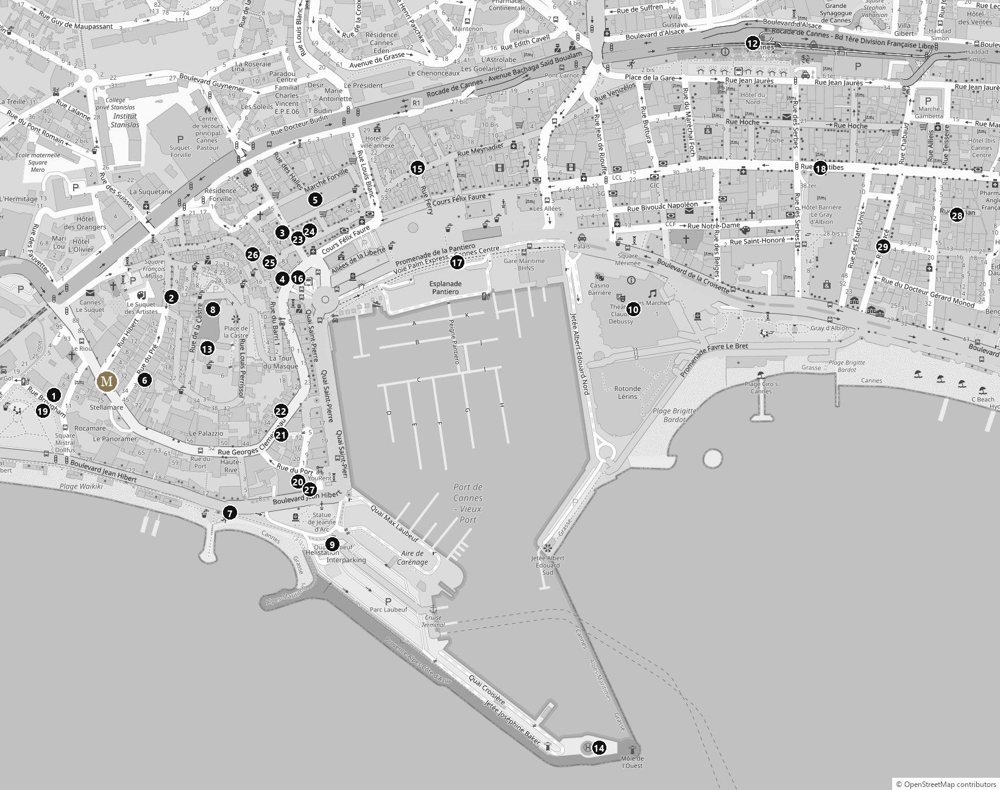
09
Les plaisirs gratuits de Cannes, au pas du promeneur.
The free pleasures of Cannes, at a stroller's pace.
5 min
Montez jusqu'à l'église Notre-Dame-d'Espérance : la plus belle vue sur la baie, les îles et l'Estérel. Magique au coucher du soleil.
Climb to the Notre-Dame-d'Espérance church: the finest view over the bay, the islands and the Esterel. Magical at sunset.
14 min
Au bout du quai Joséphine Baker, le jour se lève sur la Croisette et les yachts du Vieux-Port. Le meilleur réveil de Cannes.
At the end of the Joséphine Baker jetty, the sun rises over the Croisette and the Old Port yachts. The best wake-up call in Cannes.
8 min
La rue commerçante historique : épiceries fines, fromagers, pâtes fraîches, souvenirs choisis.
The historic shopping street: delicatessens, cheesemongers, fresh pasta, well-chosen souvenirs.
5 min
Le soir, entre l'hôtel de ville et le port, fontaines et façades s'illuminent. Une jolie promenade après le dîner.
In the evening, between the town hall and the port, fountains and façades light up. A lovely after-dinner stroll.
8 min
Sous les platanes des allées de la Liberté, près de la mairie. Regardez les habitués, ou lancez-vous.
Under the plane trees of the Allées de la Liberté, near the town hall. Watch the regulars, or have a go.
15 min
Le shopping cannois, des enseignes françaises aux créateurs. La Croisette et ses maisons de luxe juste à côté.
Cannes's shopping street, from French brands to designers. The Croisette and its luxury houses right next door.
10
Une sélection courte, choisie avec soin. Réservez en saison.
A short, carefully chosen list. Book ahead in high season.
Rooftop · 2 min
Rooftop · 2 min
Le rooftop de l'hôtel Belle Plage, au 8e étage : cuisine méditerranéenne et vue sur le Suquet, l'Estérel et la mer. Le plus beau coucher de soleil du quartier.
The Hôtel Belle Plage rooftop, on the 8th floor: Mediterranean cooking with views of Le Suquet, the Esterel and the sea. The best sunset in the area.
Hôtel Belle Plage · 2 rue Brougham
Bien-être · 2 min
Wellness · 2 min
Le spa de l'hôtel Belle Plage : soins, massages et rituels, pour une vraie parenthèse.
The Hôtel Belle Plage spa: treatments, massages and rituals, a true escape.
Hôtel Belle Plage
Japonais · 2 min
Japanese · 2 min
L'izakaya japonais niché dans les jardins du spa : assiettes à partager, tatakis, tempuras, sakés.
The Japanese izakaya tucked in the spa gardens: sharing plates, tatakis, tempura, sake.
Spa Villa Belle Plage
Brunch · 5 min
Brunch · 5 min
Le brunch club du Canopy by Hilton, servi toute la journée, esprit californien et produits locaux.
The Canopy by Hilton's all-day brunch club, Californian spirit and local produce.
Canopy by Hilton · 2 boulevard Jean Hibert
Rooftop · 5 min
Rooftop · 5 min
Le rooftop du Canopy : cocktails et petites assiettes de la mer, vue à 360° sur la Méditerranée.
The Canopy rooftop: cocktails and seafood small plates, 360° views over the Mediterranean.
Canopy by Hilton
Bien-être · 5 min
Wellness · 5 min
Jacuzzi sur le toit, sauna, hammam et massages.
Rooftop jacuzzi, sauna, hammam and massages.
Canopy by Hilton
Burgers · 4 min
Des burgers primés, champions de France. Dans votre rue.
Award-winning burgers, French champions. On your street.
39 rue Georges Clemenceau
Marocain · 4 min
Moroccan · 4 min
Un excellent couscous dans une ambiance berbère.
An excellent couscous in a Berber setting.
28 rue Georges Clemenceau
Italien · 6 min
Italian · 6 min
Le petit italien des connaisseurs.
The insiders' little Italian.
86 rue Meynadier
Cocktails · 6 min
Tequila, mezcal et street food latino, dès 18 h.
Tequila, mezcal and Latin street food, from 6 pm.
88 rue Meynadier
Gastronomique · 5 min
Fine dining · 5 min
La cuisine méditerranéenne précise de Noël Mantel.
Noël Mantel's precise Mediterranean cooking.
22 rue Saint-Antoine
Feu de bois · 5 min
Wood fire · 5 min
Grillades au feu de bois, salle aux chandelles.
Wood-fired grills, candlelit room.
15 rue Saint-Antoine
Publique · 3 min
Public · 3 min
Longue plage de sable, face au coucher de soleil sur l'Estérel.
A long sandy beach facing the sunset over the Esterel.
Plage privée · 5 min
Beach club · 5 min
Déjeuner les pieds dans le sable, puis l'après-midi sur un transat.
Lunch with your feet in the sand, then an afternoon on a sunbed.
1 boulevard Jean Hibert · 04 93 39 99 87
Croisette · toute l'année
Croisette · all year
Cuisine du soleil et parasols iconiques. Réservez.
Sun-drenched cuisine and iconic parasols. Book ahead.
Croisette
Chic et festif, très cannois.
Chic and festive, very Cannes.
À la pointe de la Croisette, à 10 minutes en taxi : le lieu des grandes soirées cannoises.
At the tip of the Croisette, 10 minutes by taxi: the home of Cannes's big nights out.
Japonais
Japanese
La grande table japonaise contemporaine, robata et vue sur la mer.
Contemporary Japanese dining, robata grill and sea views.
Dîner spectacle
Dinner show
Restaurant, spectacle puis club : la soirée complète.
Restaurant, show, then club: the full night out.
Méditerranéen · 20 min
Mediterranean · 20 min
Le dîner le plus élégant de Cannes.
The most elegant dinner in Cannes.
6 rue Florian
Club · 18 min
Nightclub · 18 min
Pour danser, entre la Croisette et la rue d'Antibes.
For dancing, between the Croisette and Rue d'Antibes.
22 rue Macé
11
La Riviera à portée de main, de la mer à l'arrière-pays.
The Riviera within reach, from the sea to the hills.
15 à 20 min de traversée
15 to 20 min crossing
Pinèdes, criques et eaux turquoise à Sainte-Marguerite ; l'abbaye et les vignes des moines à Saint-Honorat. Navettes toute l'année depuis le quai Laubeuf, à 6 minutes à pied.
Pine forests, coves and turquoise water on Sainte-Marguerite; the abbey and the monks' vineyards on Saint-Honorat. Year-round ferries from Quai Laubeuf, 6 minutes on foot.
1 h 15 · d'avril à octobre
1 h 15 · April to October
Une journée à Saint-Tropez par la mer, aller-retour dans la journée avec Trans Côte d'Azur, quai Saint-Pierre.
A day in Saint-Tropez by sea, same-day return with Trans Côte d'Azur, Quai Saint-Pierre.
1 h 15 · d'avril à octobre
1 h 15 · April to October
Le Rocher et le casino en arrivant par la mer, le long de toute la Riviera.
The Rock and the casino, arriving by sea along the whole Riviera.
20 min
Sentier entre roches rouges et mer bleue, par la superbe corniche de l'Estérel.
A path between red rocks and blue sea, along the stunning Esterel coast road.
15 min
Un château les pieds dans l'eau et ses jardins à la française.
A seafront castle with formal French gardens.
30 min
Capitale du parfum : le Musée international de la Parfumerie, puis composez votre propre fragrance.
The perfume capital: the International Perfume Museum, then create your own fragrance.
45 min
L'un des plus beaux villages de France, perché au-dessus de la côte et de la baie de Cannes.
One of the most beautiful villages in France, perched high above the coast and the Bay of Cannes.
25 min · ou 15 min en train
25 min · or 15 min by train
Remparts, musée Picasso face à la mer, marché provençal et port des plus beaux yachts.
Ramparts, the Picasso museum by the sea, a Provençal market and a harbour of superyachts.
40 min
Village perché, galeries d'art et la Fondation Maeght dans les pins.
A hilltop village, art galleries and the Fondation Maeght among the pines.
Juillet · août, le soir
July · August, evenings
La fête foraine de l'été à Cannes-la-Bocca, plus de 40 attractions, de 20 h à minuit.
The summer funfair in Cannes-la-Bocca, over 40 rides, 8 pm to midnight.
Cannes-la-Bocca
Cannes-la-Bocca
Pour un après-midi de pluie ou une soirée en famille.
For a rainy afternoon or a family evening.
Mougins · dès 10 ans
Mougins · ages 10+
Complexe de jeux immersifs (bowling, mini-golf, réalité virtuelle) avec restaurant.
An immersive games complex (bowling, mini golf, virtual reality) with a restaurant.
12
13
Vous n'avez rien à faire.
There is nothing for you to do.
Profitez de votre dernière matinée : nous nous occupons de tout.
Enjoy your last morning: we take care of everything.
Indiquez-nous simplement votre heure de départ, avant 11 h : nous passons récupérer les clés en main propre.
Just let us know your departure time, before 11 am: we will come and collect the keys in person.
Ce fut un plaisir de vous recevoir à la Maison Midi. Si vous avez aimé votre séjour, un avis 5 étoiles sur Airbnb nous aide énormément. Et si quelque chose n'était pas parfait, dites-le-nous directement avant votre départ : nous le corrigerons.
It was a pleasure having you at Maison Midi. If you enjoyed your stay, a 5-star review on Airbnb helps us enormously. And if anything was not perfect, tell us directly before you leave: we will put it right.
Olivier